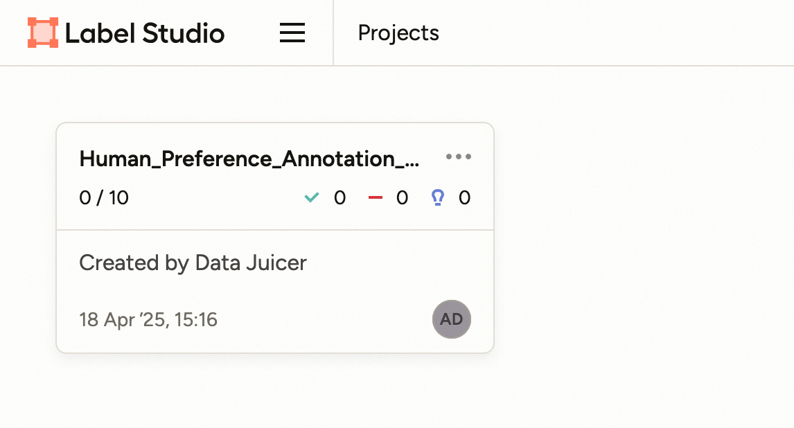

Data processing functionalities
Example: reasoning task
In this example, you will learn how to apply the data module of Trinity-RFT to prepare the dataset before exploring and training. This example takes GSM-8K dataset as the example dataset to figure out:
how to prepare the data module
how to configure the data module
what the data module can do
Before getting started, you need to prepare the main environment of Trinity-RFT according to the installation section of the README file, and you need to install postgresql as well.
Data Preparation
Prepare the Data Module
As the overall framework of Trinity-RFT shows, the data module is one of the high-level functions. Trinity-RFT encapsulates the data module as an independent service to avoid dependency conflict issues. Thus you need to prepare a split environment for this module and start the server.
# prepare split environments, including the one of data module
python scripts/install.py
# start all split servers
python scripts/start_servers.py
Configure the Data Module
Trinity-RFT uses a unified config file to manage all config items. For the data module, you need to focus on the data section in the config file.
In this example, assume that you need to rank all math questions and corresponding answers by their difficulties. So you can set these config items like the following example:
data:
# basic info
dataset_path: '/path/to/gsm8k'
dataset_config:
split: 'train' # only need the train split
format_config: # set the field mappings
prompt_key: 'question'
response_key: 'answer'
# database related. The result dataset will be stored in the database.
db_url: 'postgresql://{user_name}@localhost:5432/{db_name}'
# downstream loading related
total_epochs: 1
batch_size: 96
default_workflow_type: 'math_workflow'
Here you can set the basic information for the GSM-8K dataset, database information that is used to store the result dataset, and some other items about downstream dataset loading for exploring and training:
dataset_path: the path to the raw dataset.dataset_config: extra config arguments for loading the raw dataset. Mainly for theload_datasetmethod in HuggingFacedatasetslibrary.format_config: some dataset format config items, which are used to map original data field names to unified ones.db_url: the URL of the postgresql database to store the result dataset.total_epochs: the total number of epochs to train on this dataset.batch_size: the training batch size.default_workflow_type: the default exploring workflow type. Please refer to programming guide for more details.
In addition, there are several config items related to the data active iterator, which is used to prepare a better dataset. The core part of the data active iterator, Data-Juicer, provides tens of operators to help clean or calculate key information for each sample in the dataset. You can configure this part depending on how familiar you are with Data-Juicer.
Not familiar with Data-Juicer
If you are not familiar with Data-Juicer, the data module provides a natural-language-based method to config the data processing recipe. What you need to do is only describe the demands of how you want to prepare for the raw dataset, and an agent will be invoked to arrange the data processing recipe for you. Here is an example:
data:
# basic info
dataset_path: '/path/to/gsm8k'
dataset_config:
split: 'train' # only need the train split
format_config: # set the field mappings
prompt_key: 'question'
response_key: 'answer'
# database related. The result dataset will be stored in the database.
db_url: 'postgresql://{user_name}@localhost:5432/{db_name}'
# downstream loading related
total_epochs: 1
batch_size: 96
default_workflow_type: 'math_workflow'
#### new part about data active iterator
dj_process_desc: 'Please compute difficulty scores for these math questions.'
agent_model_name: 'qwen-max'
agent_model_config:
config_name: 'my-qwen-instruction'
model_type: 'dashscope_chat'
model_name: 'qwen2.5-72b-instruct'
clean_strategy: 'iterative'
You can write your demand description in config item dj_process_desc, and set the model name and configs used for the agent in config items agent_model_name and agent_model_config. Here we use Qwen2.5-72b-Instruct as our recipe managing agent. And you can set the clean_strategy to ‘iterative’ to get a better dataset.
Familiar with Data-Juicer
If you are familiar with Data-Juicer, you will realize that Data-Juicer provides an operator that can calculate difficulty scores using existing LLMs. In this case, you can prepare your own Data-Juicer data processing recipe and equip this operator. For example:
# This is a Data-Juicer data processing recipe
project_name: 'gsm-8k-difficulty'
export_path: '/path/to/the/result/processed-dataset.jsonl'
process:
- llm_difficulty_score_filter:
api_or_hf_model: "qwen2.5-72b-instruct" # use "qwen2.5-72b-instruct" to calculate the difficulty scores.
input_keys: ["question", "answer"] # set input_keys and field_names to the existing key names in gsm-8k. Here calculating the difficulty scores according to both questions and answers.
field_names: ["question", "answer"]
After preparing the Data-Juicer data processing recipe, you can set the dj_config_path item in the Trinity-RFT config file to the path to this recipe. For example:
data:
# basic info
dataset_path: '/path/to/gsm8k'
dataset_config:
split: 'train' # only need the train split
format_config: # set the field mappings
prompt_key: 'question'
response_key: 'answer'
# database related. The result dataset will be stored in the database.
db_url: 'postgresql://{user_name}@localhost:5432/{db_name}'
# downstream loading related
total_epochs: 1
batch_size: 96
default_workflow_type: 'math_workflow'
#### new part about data active iterator
dj_config_path: '/path/to/the/Data-Juicer/data/processing/recipe/above.yaml'
clean_strategy: 'iterative'
And you can set the clean_strategy to ‘iterative’ to get a better dataset.
All config items in the data section can be found here. A prepared config file for this example of GSM-8K can be found in the config file of gsm8k.
Note
Only when one of dj_process_desc and dj_config_path is provided, the data module and the data active iterator will be activated. Otherwise, this part will be skipped and it will enter into the exploring stage directly.
Exploring & Training
After preparing the config files of Trinity-RFT, you can start your ray cluster and run the RFT process including the data active iterator part with the following commands:
# start the ray cluster
# on master node
ray start --head
# on worker nodes
ray start --address=<master_address>
# run RFT
trinity run --config <Trinity-RFT_config_path>
If you follow the steps above, Trinity-RFT will send a request to the data module server, the data active iterator will be activated and compute difficulty scores for each sample in the raw dataset. After that, the data module server stores the result dataset into the database, when exploring begins, it will load the prepared dataset and continue the downstream steps.
Example: human in the loop
Sometimes, you might need to involve human feedbacks for some raw data. In this example, you will learn how to annotate raw data to get a better dataset before training. This example takes an example Q&A dataset and tries to select the chosen and rejected ones for DPO method.
Before getting started, you need to prepare the main environment of Trinity-RFT according to the installation section of the README file, install postgresql, and start a label-studio server from Data-Juicer from source.
Data Preparation
Prepare the Data Module
As the overall framework of Trinity-RFT shows, the data module is one of the high-level functions. Trinity-RFT encapsulates the data module as an independent service to avoid dependency conflict issues. Thus you need to prepare a split environment for this module and start the server.
# prepare split environments, including the one of data module
python scripts/install.py
# start all split servers
python scripts/start_servers.py
Configure the Data Module
Trinity-RFT uses a unified config file to manage all config items. For the data module, you need to focus on the data section in the config file.
In this example, assume that you need to rank all math questions and corresponding answers by their difficulties. So you can set these config items like the following example:
data:
# basic info
dataset_path: 'tests/test_data/test_human_annotator'
dataset_config:
split: 'train' # only need the train split
format_config: # set the field mappings
prompt_key: 'prompt'
chosen_key: 'chosen'
rejected_key: 'rejected'
#### new part about data active iterator
dj_config_path: 'tests/test_configs/human_annotator_test_dj_cfg.yaml'
# database related. The result dataset will be stored in the database.
db_url: 'postgresql://{user_name}@localhost:5432/{db_name}'
# downstream loading related
total_epochs: 20
batch_size: 32
default_workflow_type: 'math_workflow'
Here you can set the basic information for the example dataset, database information that is used to store the result dataset, and some other items about downstream dataset loading for exploring and training, which is similar to the example above.
For this example, we assume that you are somehow familiar with the basic usage of Data-Juicer, so we need to prepare a Data-Juicer data processing recipe in tests/test_configs/human_annotator_test_dj_cfg.yaml that includes an OP of human_preference_annotation_mapper. For example:
project_name: 'demo-human-annotator'
np: 1 # set np to 1 for human annotation OPs
export_path: './outputs/demo-human-annotator/annotated-data.jsonl'
process:
- human_preference_annotation_mapper:
# general annotation project settings
project_name_prefix: "Human_Preference_Annotation_Demo"
wait_for_annotations: true # Whether to wait for annotations to complete
timeout: 3600 # Maximum time to wait for annotations in seconds (1 hour)
poll_interval: 10 # Time between annotation status checks in seconds
max_tasks_per_batch: 10 # Maximum number of tasks in a single batch
notification_config:
enabled: false
# label studio connection settings
api_url: "http://localhost:7070" # Default Label Studio URL
api_key: "05409236-67a5-4169-af96-a52a818d0e81" # Your API key for label studuio authentication # pragma: allowlist secret
# human preference annotation settings
prompt_key: "prompt" # Prompt field
answer1_key: "answer1" # First answer option
answer2_key: "answer2" # Second answer option
chosen_key: "chosen" # Chosen field
rejected_key: "rejected" # Rejected field
You can set more config items for this OP (e.g. notification when annotation is finished). For more details, please refer to this doc.
Start Running
When you start running with the RFT config, the data module will start the OP human_preference_annotation_mapper, and then you can find a new project on the “Projects” page of the label-studio server.

You can click and enter into this project, and all the samples that need to be annotated are listed on the page.

Then you can click any sample and you will enter the labelling page.

For the preference annotation case, you can choose the preferred/right/chosen one and then click the “Submit” button to submit the annotation result. Then you can select other samples and continue this process.

After all samples are annotated, the OP will end automatically and store the result dataset in the target database specified by the config file. When training begins, it will load the prepared dataset and continue the downstream steps.